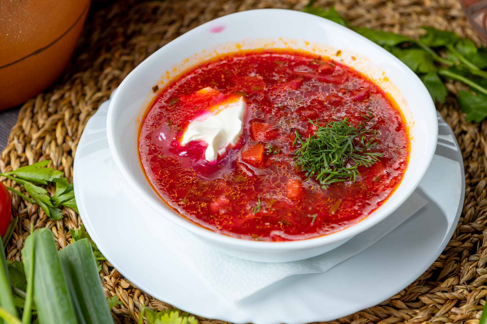

Самый лучший борщ
Фото:

У каждой хозяйки свои секреты приготовления борща.
И в каждом случае этот суп получится со своим уникальным вкусом.
Попробуйте добавить в блюдо немного кислинки.
Для этого включите в состав квашеную капусту и томатную пасту.
А чтобы не перебить тонкий кисловатый вкус, сварите бульон на диетическом мясе куриной грудки.
Вкуснее всего борщ получится, если дать ему настояться пару суток в холодильнике.
Ингридиенты:
- Куриное филе:150 г
- Свекла:200 г
- Квашеная капуста:200 г
- Картошка:300 г
- Морковь:200 г
- Репчатый лук:100 г
- Томатная паста:50 г
- Растительное масло
- Лавровый лист:2 шт
- Соль:по вкусу
- Черный перец:по вкусу
Рецепт:
- Вымойте и обсушите мясо. Овощи помойте, при необходимости очистите от кожуры и шелухи. Свеклу и морковь натрите на крупной терке. Картофель и лук порежьте кубиком.
- Обжарьте овощи. Обжарьте на сковороде с добавлением масла лук. Через 2-3 минуты добавьте морковь и свеклу. Жарьте еще 3 минуты. Посолите, поперчите и добавьте томатную пасту. Через 2-3 минуты снимите с плиты.
- Сварите суп. В кипящей воде отварите до готовности курицу. Мясо остудите и разберите на волокна. В бульон засыпьте картофель и варите до готовности. Добавьте квашеную капусту. Варите 3 минуты. Всыпьте зажарку и мясо. Проверьте на соль и перец, добавьте лавровый лист. Накройте крышкой и варите на медленном огне еще 10 минут. После чего выключите огонь и дайте настояться под крышкой еще минут 10.
- Ароматный борщ подавайте с ложкой сметаны и ломтиком хлеба.
Ссылка на источник